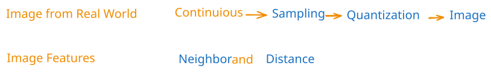
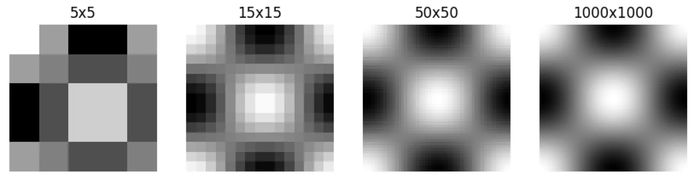

Image Basic
Overview

Basic Concepts
Image
- 图像就是数组，每个像素点的颜色是响应值。
- skimage 库中的data模块有很多预设的图片：data
Sampling
- 采样：从连续信号到离散信号。
- 通过不同尺寸的灰度图像，展示不同等级的采样对图片的影响：image-sampling

Quantization
Neighbor
- 4 邻域(上下左右)
- D 邻域(四个角)
- 8 邻域(4+D)
Distance
$(x,y)$与$(s,t)$的距离：
- 欧氏距离：$D_e = \sqrt{(x-s)^2+(x-t)^2}$
- $D_4$距离：$D_4 = |x-s|+|y-t|$
- $D_8$距离：$D_8 = \max(|x-s|+|y-t|)$
Reference
- 岳亚伟，薛晓琴，等. 数字图像处理与 Python 实现（第2版）[M]. 北京：人民邮电出版社，2024.